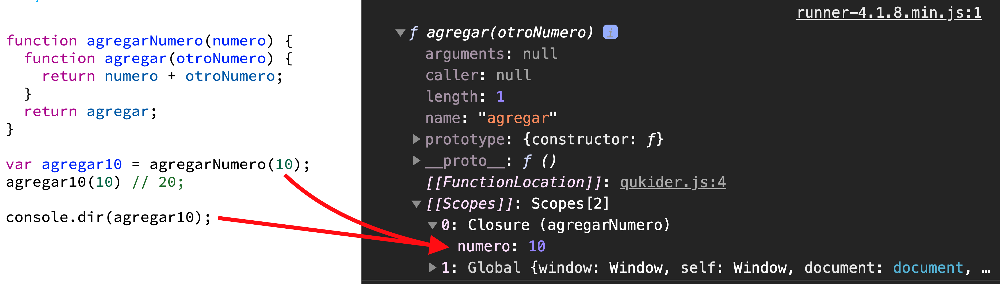

Funciones
Parametros y argumentos, scope y closures
Creado por Freddy Montes
Objetivos
- Aprender parámetros y argumentos
- Entender que es el scope de las funciones y como afecta
- Aprender a usar closure
Argumentos
Son valores que se pasan a la función cuando se invoca
Parametros
Son variables enumeradas como parte de la definición de función
Más sobre parámetros
- Son variables
- Pueden ser de cualquier tipo
- Si no se pasan son
undefined
ES6
Desde ES6 hay dos tipos nuevos de parámetros
- Parametros por defecto
- El resto de parámetros
Parámetros por defecto
Proteger las funciones
function multiply(num1, num2) {
return num1 * num2;
}
multiply(5, 2) // 10
multiply(5) // NaN !
Parámetros por defecto
Proteger las funciones
function multiply(num1, num2) {
if (typeof num2 !== 'undefined') {
num2 = 1;
}
return a * num2;
}
multiply(5, 2) // 10
multiply(5) // 5
Parámetros por defecto
Usando parametros por defecto
function multiply(a, b = 1) {
return a * b
}
multiply(5) // 5
Default parameters solo funciona con valores undefined
Ejemplo: null o false no aplica.
El resto de parámetros
Todos los argumentos no definidos en la función como un array
function saludar(saludo, ...nombres) {
return saludo + " " + nombres.join(", ") + "!";
}
saludar("Hola Mundo", "Kanye", "West");
// "Hola Mundo, Kanye West!"
Todos los parametros
// args es el nombre del array
function sumarTodo(...args) {
let sum = 0;
// Iteramos sobre el array
args.forEach(function(arg) {
sum += arg; // sumamos los valores
})
return sum;
}
sumarTodo(1, 2, 3, 4, 5) // 15
One more thing...
El objeto arguments
El objeto arguments
TODOS los argumentos de una función (no solo a los no nombrados)
El objeto es un "array-like" no un array
El objeto arguments
function sumarTodo() {
let sum = 0;
for (let arg of arguments) {
sum += arg;
}
return sum;
}
sumarTodo(1, 2, 3, 4, 5) // 15
Scope
Es el ambito donde vive variable
Scope
Hay dos tipos
- Global
- Local
Scope Global
Variables definidas fuera de una función.
Scope Local
Variables definidas dentro de una función.
Scope
La función usa las variables del scope donde vive.
var nombre = "Freddy";
var apellido = "Montes";
function imprimirDatos() {
var saludo = "Hello";
console.log(nombre + ' ' + apellido);
function hello() {
console.log(saludo + ' ' + nombre + ' ' + apellido);
}
hello();
}
imprimirDatos();
// "Freddy Montes"
// "Hello Freddy Montes"
Scope
Pero el scope no puede usar las variables de la función
var nombre = "Freddy";
var apellido = "Montes";
function imprimirDatos() {
var saludo = "Hello";
console.log(nombre + ' ' + apellido);
function hello() {
var despedida = "Bye!"
console.log(saludo + ' ' + nombre + ' ' + apellido + ' ' + despedida);
}
hello();
// ReferenceError: despedida is not defined
console.log(despedida);
}
// ReferenceError: saludo is not defined
console.log(saludo);
// ReferenceError: hello is not defined
hello();
Scope de bloque
Variables con let y const tienen scope de bloque.
¿Que es un bloque?
Sentencias (lineas de código) entre {}
Bloques más comunes
if (some_condition) {
console.log('hacer algo');
}
for (let arg of arguments) {
console.log('hacer algo');
}
while (counter < 10) {
console.log('hacer algo');
}
let y const
let numero = 10;
if (numero > 9) {
let mensaje = 'El numero es mayor que 9';
console.log(mensaje);
}
// ReferenceError: mensaje is not defined
console.log(mensaje);
Cambiamos por var
let numero = 10;
if (numero > 9) {
var mensaje = 'El numero es mayor que 9';
console.log(mensaje);
}
// "El numero es mayor que 9"
console.log(mensaje);
Lo mismo en una función
function imprimirMensaje(numero) {
if (numero > 9) {
let mensaje = 'El numero es mayor que 9';
console.log(mensaje);
// El numero es mayor que 9
}
console.log(mensaje);
// ReferenceError: mensaje is not defined
}
imprimirMensaje(10);
Closure
Es cuando una fución interna tiene acceso a las variables de la función externa.
¿Para que sirve closure?
Esta función suma 5 al valor que le pasemos
function agregarCinco(numero) {
return numero + 5
}
agregarCinco(10) //15
¿Como hacemos una función que nos permita sumar cualquier numero?
Usando closure
Una función que retorna otra función
function agregarNumero(numero) {
function agregar(otroNumero) {
return numero + otroNumero;
}
return agregar;
}
¿y esto para que sirve?
Usando closure
Una función que retorna otra función
function agregarNumero(numero) {
function agregar(otroNumero) {
return numero + otroNumero;
}
return agregar;
}
var agregar10 = agregarNumero(10);
var agregar5 = agregarNumero(5);
agregar10(10) // 20;
agregar5(10) // 15;
Inspeccionando el Closure
console.dir(agregar10)

Podemos ver todos los scopes
Miremos este código
const RANDOM = 99;
function agregarNumeroRandom(numero) {
function agregar(otroNumero) {
return numero + otroNumero + RANDOM;
}
return agregar;
}
const agregar10 = agregarNumeroRandom(10);
console.dir(agregar10);
Inspeccionando el Closure
console.dir(agregar10)